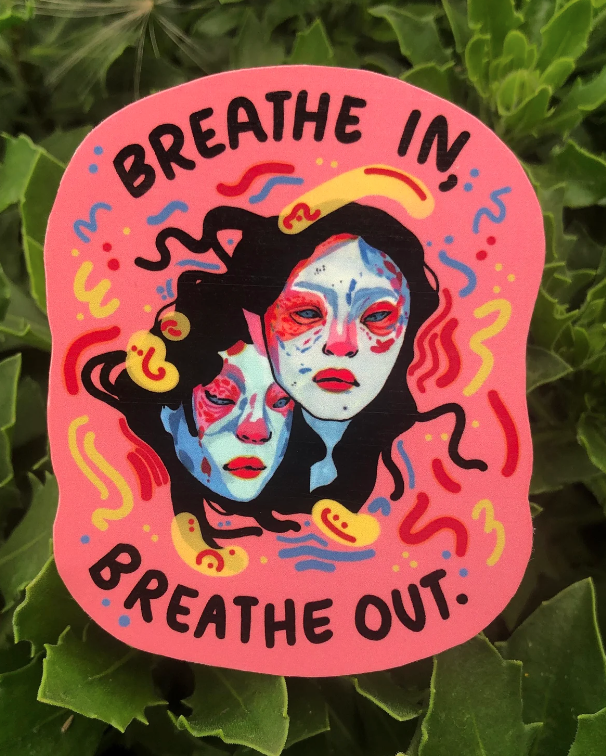
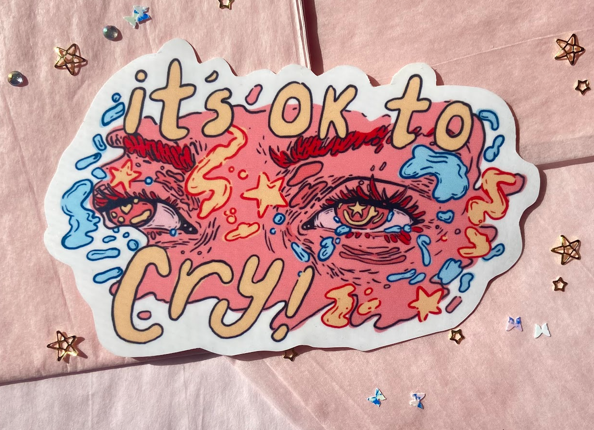
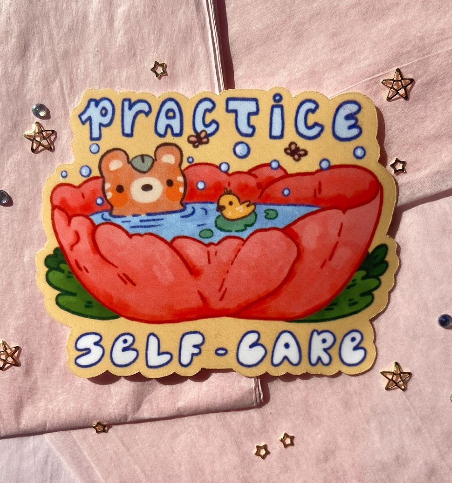
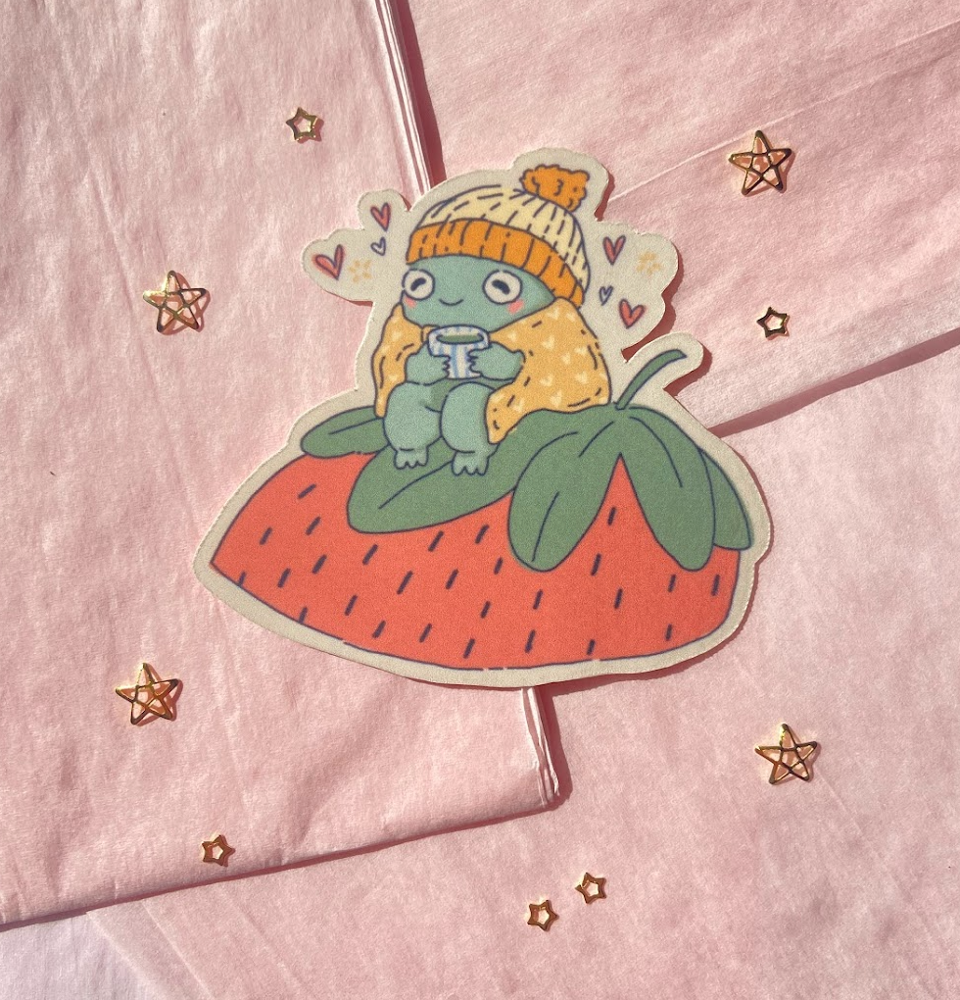
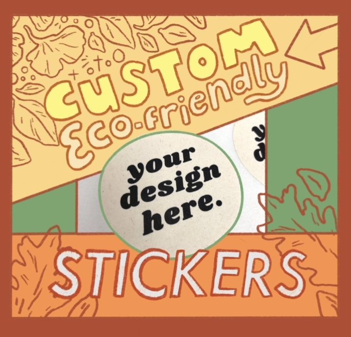
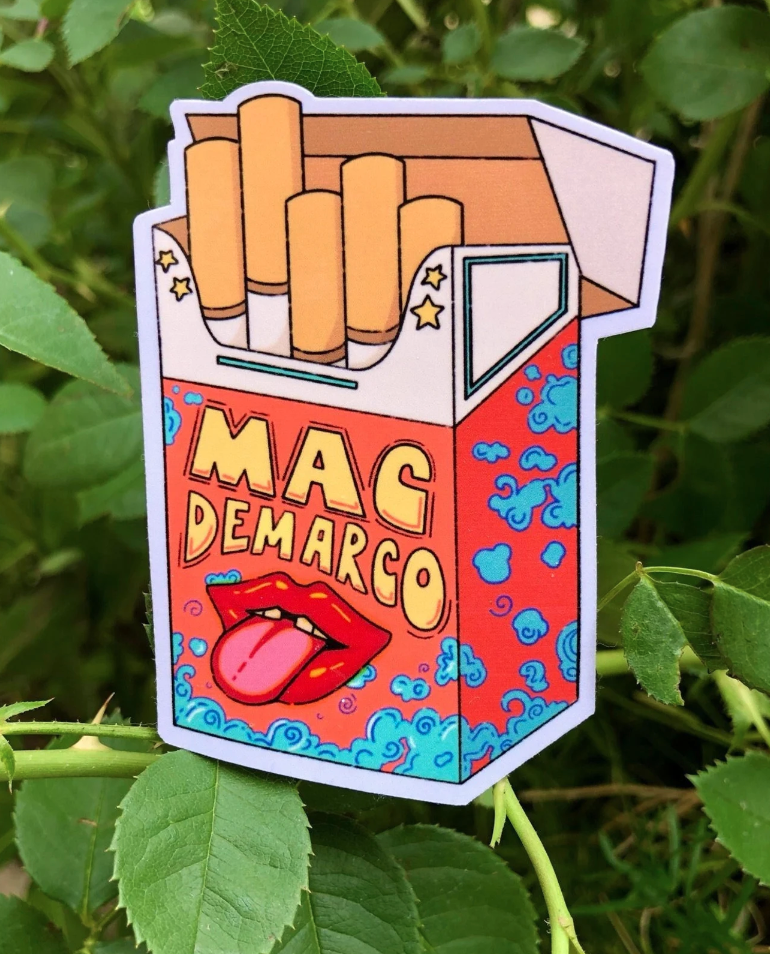
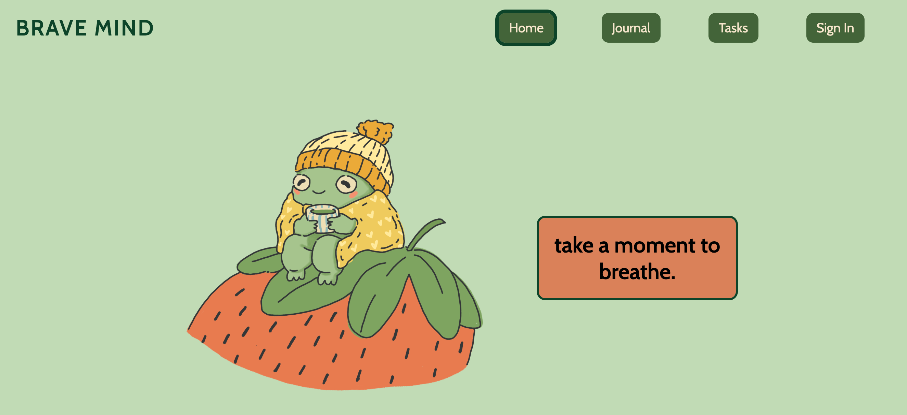
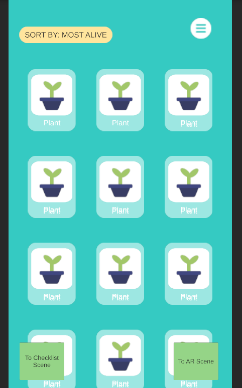
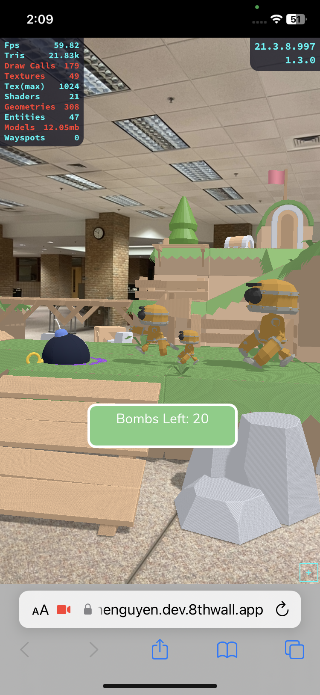

Designs
My designs include web 3-D, AR experiences, and digital art!
My art often focuses on mental health and self-care. I find that it's important to have things that remind you to relax and be mindful everyday. I also make stickers starring my favorite musical artists and custom sugar cane stickers!






I enjoy designing for websites and alternate/virtual reality experiences. A couple of my projects include mental health/sustainability sites and games.


